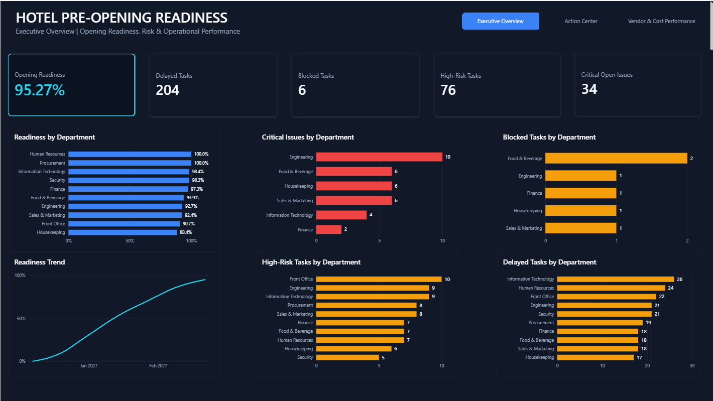
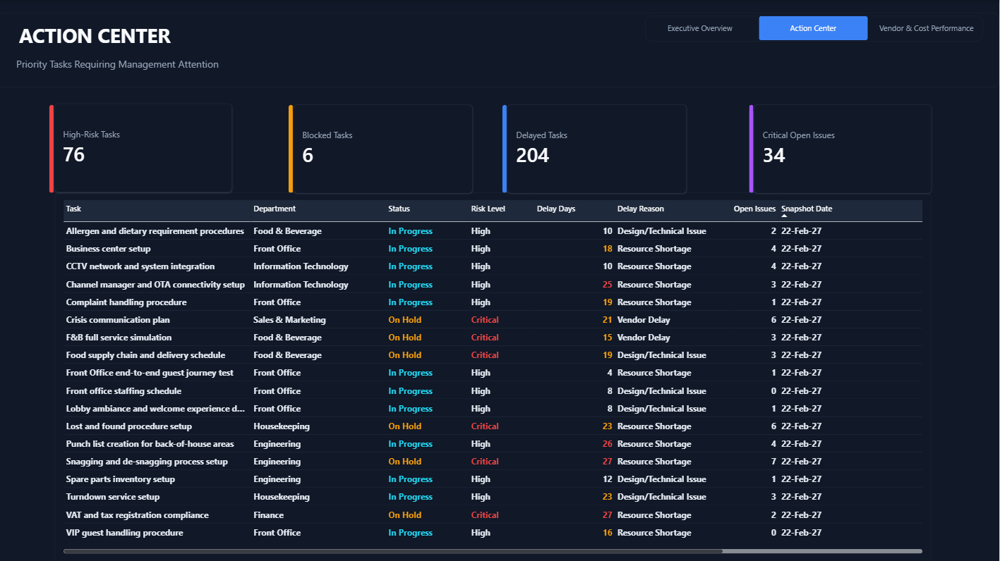
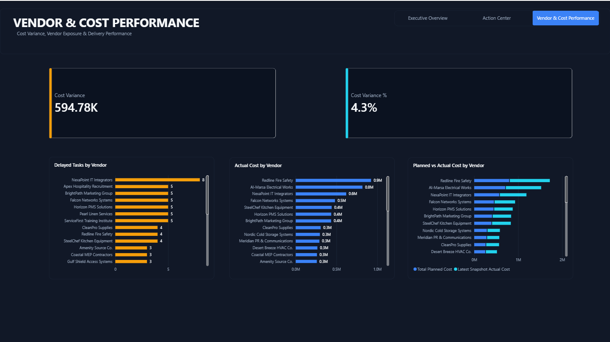

Project at a Glance
333Unique Tasks
3,996Weekly Snapshots
10Departments
95.27%Latest Snapshot Readiness
An end-to-end hospitality analytics project designed to answer a critical pre-opening business question: is the hotel on track to open on time, and which departments, tasks, and vendors pose the greatest operational risk? Instead of using a ready-made dataset, I built a custom synthetic dataset from scratch using Python and Pandas, based on a fictional hotel pre-opening scenario. The data was cleaned, validated, structured, loaded into SQL Server for analysis, and visualized through a three-page Power BI dashboard.

Hotel pre-opening programs involve hundreds of interconnected tasks across multiple departments, vendors, deadlines, and operational dependencies.
Management needs more than a simple task list. They need visibility into overall readiness, delayed work, critical issues, departmental performance, vendor risk, and cost variance. This project was designed to transform that operational complexity into a decision-support dashboard for management.
“Is the hotel ready to open, and where should management focus attention?”
Rather than downloading a ready-made analytics dataset, I designed and generated a custom synthetic dataset using Python and Pandas. The dataset simulates a hotel pre-opening program across 10 departments and tracks task progress through 12 weekly snapshots.
333 unique pre-opening tasks including ownership, priority, critical-path status, planned dates, vendors, and costs.
3,996 weekly observations tracking task status and progress over time.
10 operational and support departments.
Vendor information covering internal and external delivery responsibilities.
After generating and validating the dataset, I loaded the analysis-ready data into SQL Server. SQL analysis was used to explore task performance, departmental readiness, operational risks, and cost patterns.
The cleaned data was modeled in Power BI using relationships between departments, tasks, task snapshots, vendors, and date dimensions. DAX measures were created to track operational KPIs including:
Provides management with a high-level view of hotel readiness, delayed work, blocked tasks, high-risk activities, critical issues, readiness trends, and departmental performance.

Turns the dashboard from passive reporting into an operational management tool by highlighting tasks requiring immediate attention and allowing management to focus on priority risks.

Analyzes vendor performance and financial variance to identify potential delivery and cost risks before opening.

These figures reflect the latest weekly snapshot of the synthetic pre-opening scenario, not a real hotel.
This portfolio project uses synthetic operational data informed by publicly available hotel pre-opening frameworks. It contains no confidential or operational data from my employer or any real property.